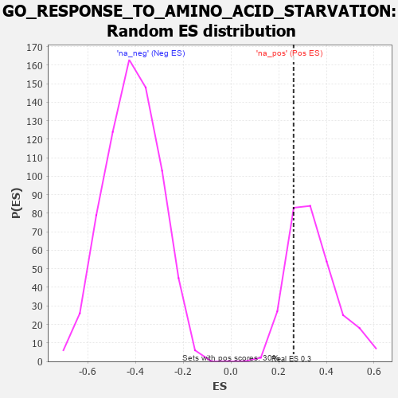

| | | Dataset | 7d |
| Phenotype | NoPhenotypeAvailable |
| Upregulated in class | na_pos |
| GeneSet | GO_RESPONSE_TO_AMINO_ACID_STARVATION |
| Enrichment Score (ES) | 0.26263526 |
| Normalized Enrichment Score (NES) | 0.7621488 |
| Nominal p-value | 0.79 |
| FDR q-value | 0.93333966 |
| FWER p-Value | 1.0 |
Table: GSEA Results Summary
 Fig 1: Enrichment plot: GO_RESPONSE_TO_AMINO_ACID_STARVATION
Fig 1: Enrichment plot: GO_RESPONSE_TO_AMINO_ACID_STARVATION
Profile of the Running ES Score & Positions of GeneSet Members on the Rank Ordered List
| PROBE | GENE SYMBOL | GENE_TITLE | RANK IN GENE LIST | RANK METRIC SCORE | RUNNING ES | CORE ENRICHMENT | | 1 | TFEB | | | 839 | 0.522 | 0.0196 | Yes |
| 2 | KPTN | | | 1341 | 0.422 | 0.0578 | Yes |
| 3 | EIF2A | | | 1366 | 0.416 | 0.1544 | Yes |
| 4 | NPRL3 | | | 1592 | 0.375 | 0.2162 | Yes |
| 5 | NPRL2 | | | 2184 | 0.278 | 0.2086 | Yes |
| 6 | MAPK3 | | | 3589 | 0.062 | 0.0470 | Yes |
| 7 | WDR59 | | | 3692 | 0.045 | 0.0449 | Yes |
| 8 | GCN1 | | | 3923 | 0.006 | 0.0174 | Yes |
| 9 | MTOR | | | 4114 | -0.025 | -0.0006 | Yes |
| 10 | RRAGD | | | 4183 | -0.039 | 0.0002 | Yes |
| 11 | SESN1 | | | 4192 | -0.041 | 0.0089 | Yes |
| 12 | RRAGA | | | 4223 | -0.046 | 0.0161 | Yes |
| 13 | ITFG2 | | | 4796 | -0.156 | -0.0183 | Yes |
| 14 | FLCN | | | 5140 | -0.235 | -0.0051 | Yes |
| 15 | WDR24 | | | 5568 | -0.338 | 0.0223 | Yes |
| 16 | LARP1 | | | 5616 | -0.349 | 0.1001 | Yes |
| 17 | DAP | | | 5732 | -0.386 | 0.1784 | Yes |
| 18 | SZT2 | | | 5882 | -0.429 | 0.2626 | Yes |
Table: GSEA details [plain text format]

Fig 2: GO_RESPONSE_TO_AMINO_ACID_STARVATION: Random ES distribution
Gene set null distribution of ES for GO_RESPONSE_TO_AMINO_ACID_STARVATION